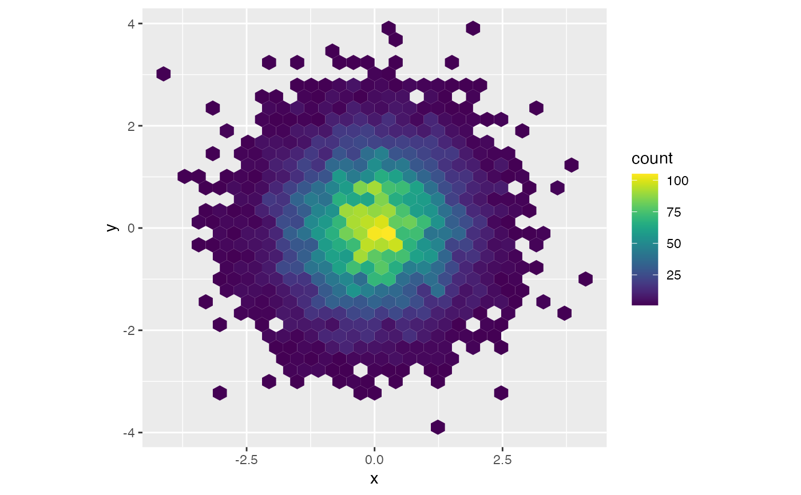

This function creates a vector of n equally spaced colors
along the selected color map.
viridis(n, alpha = 1, begin = 0, end = 1, direction = 1, option = "D") viridisMap(n = 256, alpha = 1, begin = 0, end = 1, direction = 1, option = "D") magma(n, alpha = 1, begin = 0, end = 1, direction = 1) inferno(n, alpha = 1, begin = 0, end = 1, direction = 1) plasma(n, alpha = 1, begin = 0, end = 1, direction = 1) cividis(n, alpha = 1, begin = 0, end = 1, direction = 1) rocket(n, alpha = 1, begin = 0, end = 1, direction = 1) mako(n, alpha = 1, begin = 0, end = 1, direction = 1) turbo(n, alpha = 1, begin = 0, end = 1, direction = 1)
Arguments
| n | The number of colors (\(\ge 1\)) to be in the palette. |
|---|---|
| alpha | The alpha transparency, a number in [0,1], see argument alpha in
|
| begin | The (corrected) hue in [0,1] at which the color map begins. |
| end | The (corrected) hue in [0,1] at which the color map ends. |
| direction | Sets the order of colors in the scale. If 1, the default, colors are ordered from darkest to lightest. If -1, the order of colors is reversed. |
| option | A character string indicating the color map option to use. Eight options are available:
|
Value
viridis returns a character vector, cv, of color hex
codes. This can be used either to create a user-defined color palette for
subsequent graphics by palette(cv), a col = specification in
graphics functions or in par.
viridisMap returns a n lines data frame containing the
red (R), green (G), blue (B) and alpha (alpha)
channels of n equally spaced colors along the selected color map.
n = 256 by default.
Details
Here are the color scales:

magma(), plasma(), inferno(), cividis(),
rocket(), mako(), and turbo() are convenience functions
for the other color map options, which are useful when the scale must be
passed as a function name.
Semi-transparent colors (\(0 < alpha < 1\)) are supported only on some
devices: see rgb.
Author
Simon Garnier: garnier@njit.edu / @sjmgarnier
Examples
library(ggplot2) library(hexbin) dat <- data.frame(x = rnorm(10000), y = rnorm(10000)) ggplot(dat, aes(x = x, y = y)) + geom_hex() + coord_fixed() + scale_fill_gradientn(colours = viridis(256, option = "D"))# using code from RColorBrewer to demo the palette n = 200 image( 1:n, 1, as.matrix(1:n), col = viridis(n, option = "D"), xlab = "viridis n", ylab = "", xaxt = "n", yaxt = "n", bty = "n" )